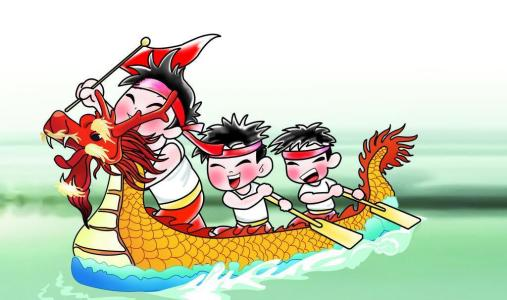

端午来源
◆每年农历五月初五端午节，我国各地都有吃粽子和赛龙舟的习俗。吃粽子是纪
念屈原，那端午节为什么要纪念屈原呢?
◆人们都知道，这种世代相传的古俗是为了纪念屈原的。可为什
么要用这种方式纪念屈原呢?原来在屈原故乡流传着这么一个有趣的故事。屈原投汨罗江之后，有天夜里，屈
原故乡的人忽然都梦见屈原回来了。他峨冠博带，一如生前，只见面容略带几分忧戚与憔悴。乡亲们高兴极了，
纷纷拥上前去，向他行礼致敬。屈原一边还礼，一边微笑着说："谢谢你们的一片盛情，楚国人民这样爱憎分明，
不忘记我，我是死而无憾了。"话别谈旧间，众人发现屈原的身体已大不如过去，就关切地问道："屈大夫，我
们给你送去的米饭，你吃到了没有?"谢谢"，屈原先是感激，接着又叹气说："遗憾哪。你们送给我的米饭，都给
鱼虾龟蚌这般水族吃了。"乡亲们听后都很焦急："要怎样才能不让鱼虾们吃掉呢?"屈原想了想说："如果用箬叶
包饭，做成有尖角的角黍，水族见了，以为是菱角，就不敢去吃了。" 第二年端午节，乡亲们便用箬叶包成许多
角黍，投入江中。可是端午节过后，屈原又托梦说："你们送来的角黍，我吃了不少，可是还有不少给水族抢去
了。"大家又问他："那还有什么好法子呢?"屈原说："有办法，你们在投放角黍的舟上，加上龙的标记就行了。
因为水族都归龙王管，到时候，鼓角齐鸣，桨桡翻动，它们以为是龙王送来的，就再也不敢去抢了。"角黍，就
是现在的粽子。
◆从此端午节包粽子、划龙舟的习俗，就由屈原的故乡传向全国，由古代传到今天。
端午发展
◆端午节起源于中国，最初为古代百越地区（长江中下游及以南一带）崇拜龙图腾的部族举行图腾祭祀的节日，
百越之地春秋之前有在农历五月初五以龙舟竞渡形式举行部落图腾祭祀的习俗。是现在的粽子。

◆后因战国时期的楚国（今湖北）诗人屈原在该日抱石跳汨罗江自尽，统治者为树立忠君爱国标签将端午作为纪念屈
原的节日；部分地区也有纪念伍子胥、曹娥等说法。 香囊 先秦时期 先秦时，南北风俗各异，但是五月五日作为一
个“节日”已各有所侧重。 战国时代，人们已把五月五日视为“恶月”“恶日”。《大戴礼》云：“五月五日蓄兰为沐浴。”
◆秦代 到秦代之后，由于国家统一，南北的经济文化交流使风俗习惯也互相融合，端午节就在南北风俗融合的基础
上形成了。
◆但是，就现文献记载来看，两汉时的端午风俗还主要是避恶。 魏晋南北朝 魏晋南北朝时期，由于战争频繁，人
们饱尝战乱之苦，所以最重视的端午习俗莫过于“辟兵缯”了。用五色丝染练制成日月、星辰、鸟兽之形状，上刺文绣、
金缕，即叫辟兵缯，也沿袭汉代名称为长命缕或续命缕。
◆隋唐时期 隋唐时期，端午节从风俗形式上都继承了前朝。但是，从性质上讲，原来有特定意义的节日风俗活动，到
此大多演变为节日娱乐活动。“恶日”已不恶，逢凶化吉，充满了节日的欢乐。唐玄宗《端午三殿宴群臣探得神字˙诗序》
中记述：皇宫端午日盛况，召来儒雅臣僚，大张筵席，“广殿肃而清气生，列树深而长风至”。 唐代端午龙舟竞渡
尤其值得一道。在唐代全盛时期，经济繁荣，人民生活相对稳定，在节日娱乐方面，一方面是上行下效，蔚成风气，另
一方面对民间的一些风俗活动也受到官府的支持。因此，竞渡之风尤为鼎盛。 宋代 宋代以后，端午节许多风俗有了新
变化。汉魏时以朱索、桃印施于门户，止恶气驱瘟避邪，而宋代却讲究贴天师符。陈元靓
《岁时广记》引
《岁时杂记》
云：“端午，都人画天师像以卖。”还有合泥作张天师，以艾为头，以蒜为拳，置于门户上。
◆宋代，汉族端午节俗也被辽、金两国吸收。如《辽史·礼志》就记载辽国重午朝仪，皇帝要系长寿彩缕才升坐。对南北
臣僚也要各赐寿缕。而金国除吸收一些汉族风俗外，在端午节还有拜天之礼、射柳之俗及击鞠娱乐活动。《金史·世宗本纪》就记载：大定三年（公元1264年）重午，金世宗“幸广乐园射柳，胜者赐物有差，复御常武殿，赐宴击鞠，自是岁
以为常。”《金史·礼志》对此俗有详细叙述。金俗重午、中元（七月十五日）、重九日行拜天之礼，筑台拜天。重五拜
天之后，插柳球场，射者要以尊卑为序。射柳完毕要打马球。
◆明清时期 到了明代，端午节又吸收了金人射柳之风俗。明永乐年间禁宫中就有剪柳之戏，剪柳即射柳，北方人还有将
鹁鸪鸟藏在葫芦，悬于柳枝，弯弓射之。如果射中葫芦中，鹁鸪就飞出来，以此来定胜负。这种民间比赛也是常在端
五日举行，考其渊源，正是辽金遗俗。 明代把端午又称“女儿节”。《帝京景物略》云：“五月一日至五日，家家妍饰
小闺女，簪以榴花，曰‘女儿节’。”不仅节日名称有异宋代，而且民间风俗也有变化。 明清时期，端午风俗活动形式
变化虽不大，但是规模却愈来愈盛行。尤其南方龙舟竞渡，成为轰动一时的盛举。据《武陵竞渡略》记载，龙舟竞渡
已不限于端午一天。而是“四月八日揭篷打船，五日一日新船下水，五日十日十五日划船赌赛，十八日送标”。还有“五
月十七八打船，二十七八送标者”。竞渡规模历时经月。对此事“或官府先禁后驰，民情先鼓后罢也。”
◆宋代就出现的端午贴天师符风俗，到明清时更为流行。不但有天师符，还有“五雷符”、“纸符”、“五毒符”、“五瑞符”
等。 清代端午极力打扮小女儿，已出嫁之女也可回家归宁，称之“女儿节”。
◆近现代 2006年5月20日，端午节民俗经国务院批准列入第一批国家级非物质文化遗产名录。
端午习俗
◆端午节的礼俗、食俗。
◆避恶去毒。古人认为五月是个“恶月”，“阴阳争，血气散”，汉人应劭的《风俗通义》甚至有“俗说五月 五日生
子，男害父，女害母”的记载。因此自古便有端午避恶去毒的礼俗。《夏小正》提倡“蓄采仙药”，《后汉 书》主
张“朱索五色柳桃印为门户饰，以止恶气”，《荆楚岁时记》也肯定“采艾以为人，悬门户上，以禳毒气” 的作
法。因此，后世端午节由许多习俗与食俗(诸如挂钟馗像，贴午时符，采集蟾酥和草药，悬挂菖蒲、艾草、 石榴

花、大蒜头和龙船花。祛除蝎子、毒蛇、壁虎、蛤蟆与蜈蚣等五毒;饮用雄黄酒、朱砂酒和菖蒲酒，小儿涂雄黄、
佩香袋、挂药包与系五彩丝，赐扇，沐格兰汤;熙游避灾，露天饮宴;赛龙舟;比武;吃咸蛋和粽子，喝龟肉
汤等)，无不出自避兵鬼、驱魔疠、止病瘟、强身体之目的。从这个意义上讲，端午节应当是个防御疾病、卫生保
健的节日。 为了使之更有情趣，它在传承过程中还融进了祝福、纳吉、游戏、踏青、竞技、美食等内容，显得
文采焕灿， 英华纷 披。 更有意味的是，端午节的许多宴席均用药物或避邪的名称命名，如
《东京梦华录》记
载的“艾人宴”，
《武林 旧事》记载的
《禳会宴》，
《胜饮篇》记载的“菖蒲宴”，
《岁时广记》记载的“解粽宴”
等，这都可作为“端午 辟恶”的佐证。 端午节各地有不同的风俗，较流行的有龙舟竞渡，也叫赛龙船，传说是
为了拯救落江的屈原。其它的活动还有 插艾、贴符、挂图等。
端午节是我国的传统节日
◆端午节又称端节、蒲节、重五节、端阳节、天中节、天长节、五月节、女娲节、龙 子节、诗人节、女儿节、娃
娃节、龙船节。香包节、沐兰节、白赏节、解粽节、粽包节，时在农历五月初五(唯温 州地区为纪念明代忠臣
刘景下狱而定在五月初四)，并有“小端阳”(五月初五)与“大端阳”(五月十五)之分。
◆据晋周处《风土记》记载“端者，初也。”即每月初五这一天，唐玄宗的生日是八月初五，当时的宰相为了讨 好
皇帝，避“五”字的讳，于是把“端五”改为“端午”。这一改意思更加明确，古代以地支纪月，正月建寅，二 月为
卯，顺次五月为“午”，因此端午即五月初五。 端午节的起源、传说颇多，主要的有: ①普遍的说法是纪念受国
诗人屈原，据唐文秀《端午诗》记载:“节分端午自谁言?万古传闻为屈原，堪笑楚 江空渺渺，不能洗得直臣冤。
” ②纪念各族英雄人物。这里面包括替父报仇雪耻的伍子胥。安贫守节的介子推，为操练水军而创设龙舟竞渡的
越王勾践，威震西域的伏波将军马援，反对朱棣篡位的谏臣刘景，投江祭父的孝女曹娥，大理白族坚贞不屈的

白洁 夫人，西双版纳神勇的傣族王子岩洪蹩，苗家的屠龙英雄保儿，采集百花降病魔的藏族姑娘莲花，岁暮捉
鬼的钟馗， 忠于爱情的蛇仙白 娘子等。 ③原始宗教的植物崇拜。如
《诗经。大田》中有“与其黍稷，以享祭祀
”的记登，以及
《风土记》中“仲夏端 午，烹骛角黍(粽女)的记载。 ④夏商周三代的兰浴说。道教定农历五月初
五为“地腊”，是日要香场沐浴，驱逐瘴气，祭奠神祖，以保平安。 ⑤古代吴越民族的图腾祭说。吴越先民断发
文身，以“龙子”自居，每逢端午，都要赛龙舟、抛筒粽娱神，以 求部落昌盛，以上诸说，长助并存，没有定论。

 端午习俗
端午习俗